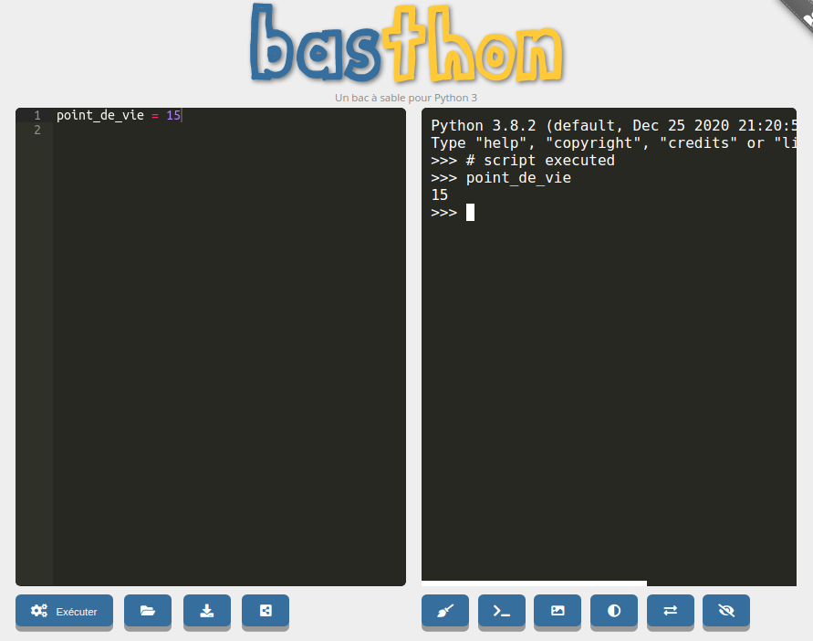

Activité
activité 1.1
Pour écrire nos programmes en Python, nous utiliserons le logiciel Spyder.
Une fois Spyder lancé (attention de bien choisir Spyder3 ou supérieur et surtout pas Spyder2.7), vous devriez obtenir quelque chose qui ressemble à cela :

Spyder se divise en plusieurs fenêtres, deux fenêtres vont principalement nous intéresser : la fenêtre "éditeur" et la fenêtre "console".
Dans la fenêtre "éditeur", saisissez le programme suivante :
print("hello world !")
Cliquez sur le "triangle vert" afin d'exécuter le programme qui vient d'être saisi.

Spyder va vous demander d'enregistrer le programme, enregistrez-le dans un dossier qui vous servira de dossier de travail
Vous devez voir le message "hello world !" apparaître dans la console

activité 1.2
Dans la partie "éditeur" de Spyder, saisissez le code suivant :
point_de_vie = 15

Après avoir exécuté le programme en cliquant sur le triangle vert, il est possible de connaitre la valeur de la variable point_de_vie en tapant le nom de la variable dans la "console" de Spyder.
Tapez point_de_vie dans la partie console

Après avoir appuyé sur la touche "Entrée", vous devriez voir la valeur associée au nom point_de_vie s'afficher dans la console.
N.B. : Dans la suite la procédure sera toujours la même :
- Vous utiliserez la partie "éditeur" pour saisir votre programme
- vous utiliserez la partie "console" pour afficher la valeur d'une variable
activité 1.3
Si vous n'avez pas la possibilité d'utiliser Spyder (ou tout autres éditeurs), vous pouvez utiliser l'outil en ligne basthon à l'adresse https://basthon.fr/
Voici la page d’accueil de basthon :

Une fois sur cette page d'accueil, cliquez sur Console, vous devriez alors avoir ceci :

Vous allez retrouvez ce que nous avons déjà vu avec Spyder : à gauche vous avez l'éditeur et à droite la console.
Dans la partie "éditeur" de Basthon, saisissez le code suivant :
point_de_vie = 15
Vous pouvez ici aussi utiliser la console pour connaître la valeur d'une variable :
Tapez point_de_vie dans la partie console de Basthon et appuyez sur "Entrée"

activité 1.4
Testez le programme suivant :
a = 5.2
b = 12
après avoir exécuté ce programme, tapez type(a) puis type(b) dans la console.
Vérifiez que le type de la variable a est float et le type de la variable b est int
activité 1.5
Quelles sont les valeurs des variables suivantes : d, e, f, g, h et i après l'exécution du programme ci-dessous
import math
a = 5
b = 16
c = 3.14 / 2
d = b / a
e = b // a
f = b % a
g = math.pow(a,2)
h = math.sqrt(b)
i = math.sin(c)
activité 1.6
Soit le programme suivant :
a = "Hello"
b = "World"
mon_expression = a + b
activité 1.7
Soit le programme suivant :
mon_nombre = 5
res = f"Nombre de personnes : {mon_nombre}"
activité 1.8
Soit la fonction suivante :
def ma_fonction(x):
y = 3 * x + 2
return y
Après avoir exécuté le programme ci-dessus, tapez dans la console ma_fonction(4). Vous devriez obtenir ceci :
activité 1.9
Soit la fonction suivante :
def ma_fonction(x,b):
y = 4 * x + b
return y
Quelle est la valeur renvoyée par cette fonction si on prend x = 3 et b = 3 ?
Vérifiez votre réponse à l'aide de la console.
activité 1.10
Soit la fonction suivante :
def annonce(num, prov, dest):
if dest != "0":
msg = f"le train n° {num} en provenance de {prov} et à destination de {dest}, entre en gare."
else:
msg = f"le train n° {num} en provenance de {prov} entre en gare. Ce train est terminus Triffouillis-les-Oies."
return msg
mon_msg = annonce(4242, "Paris", "0")
Quelle est la valeur de la variable mon_msg après l'exécution de ce programme ?
Vérifiez votre réponse à l'aide de la console.
activité 1.11
Soit la fonction suivante :
def ma_fct(a,b):
if a < 5 and b > 2 :
return 42
else :
return 24
val = ma_fct(6, 3)
Quelle est la valeur de la variable val après l'exécution de ce programme ?
Vérifiez votre réponse à l'aide de la console.
activité 1.12
Soit la fonction suivante :
def ma_fct(a,b):
if a < 5 or b > 2 :
return 42
else :
return 24
val = ma_fct(6, 3)
Quelle est la valeur de la variable val après l'exécution de ce programme ?
Vérifiez votre réponse à l'aide de la console.
activité 1.13
Soit la fonction suivante :
def ma_fct(a,b):
if a < 2 or b < 2 :
return 42
else :
return 24
val = ma_fct(6, 3)
Quelle est la valeur de la variable val après l'exécution de ce programme ?
Vérifiez votre réponse à l'aide de la console.
activité 1.14
Soit la fonction suivante :
def ma_fct(a):
b = 0
while a > 2:
b = b + 1
a = a - 2
return b
val = ma_fct(6)
Quelle est la valeur de la variable val après l'exécution de ce programme ?
Vérifiez votre réponse à l'aide de la console.
activité 1.15
Soit la fonction suivante :
def ma_fct(a):
b = 3
while a > 0:
b = b + a
a = a - 2
return b
val = ma_fct(6)
Quelle est la valeur de la variable val après l'exécution de ce programme ?
Vérifiez votre réponse à l'aide de la console.
activité 1.16
On désire programmer une fonction qui prend en paramètre le rayon d'un cercle et renvoie son aire :
import math
def aire_cercle(...):
aire = math.pi*r**2
return ...
Complétez la fonction aire_cercle ci-dessus (remplacez les ...).
activité 1.17
On désire programmer une fonction qui prend en paramètre un nombre et qui renvoie la chaîne de caractères "pair" si le nombre est pair et "impair" dans le cas contraire
import math
def pair_impair(n):
if ... % 2 == 0:
return ...
else :
return "impair"
Complétez la fonction pair_impair ci-dessus (remplacez les ...).
activité 1.18
On désire écrire une fonction rebours qui permet d'afficher un compte à rebours à l'écran. Cette fonction prend en paramètre la valeur de départ.
Exemple : si on tape dans la console rebours(5), on doit obtenir :
5
4
3
2
1
0
Complétez la fonction rebours suivante :
def rebours(n):
while ...:
print(n)
...
activité 1.19
Vous êtes gérant d'un magasin et vous désirez écrire un programme Python qui calculera automatiquement le montant de la facture des clients.
Tout client qui achète au moins 5 fois le même article se voit octroyer une remise de 5 % (uniquement sur le montant de l'achat de cet article).
Afin de simplifier le problème, on considère qu'un client n'achète qu'un seul type d'article.
Écrivez une fonction facture qui prend en paramètre le prix unitaire de l'article et le nombre d'articles achetés. Cette fonction doit renvoyer le montant de la facture.
activité 1.20
Vous allez créer "un générateur automatique de punition" :
Écrivez une fonction punition qui prendra 2 paramètres : une chaîne de caractère et un nombre entier
Par exemple :
Si on passe comme paramètres à notre fonction : "Je ne dois pas discuter en classe" et 3
La fonction devra permettre d'afficher :
Je ne dois pas discuter en classe
Je ne dois pas discuter en classe
Je ne dois pas discuter en classe
activité 1.21
Écrivez une fonction multi permettant d'afficher une table de multiplication. Cette fonction devra prendre en paramètre la table désirée.
Par exemple si l'on passe le paramètre 3 à la fonction, la fonction devra permettre d'afficher :
1 x 3 = 3
2 x 3 = 6
...
...
10 x 3 = 30